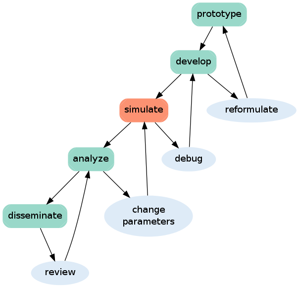

Simulation and Metadata Management
Automate
About me
scientific/academic code developer
run/manage simulations (code monkey)
an epic Pythonista (according to OSRC)
FiPy developer
interested in reproducible research, see @wd15dan
Imagine...
A declarative metadata standard
that you can use to tell a Linux VM how to download your data, execute your computational analysis, and spin up an interface to a literate computing environment with the analysis preloaded. Then we can provide buttons on scientific papers that say "run this analysis on Rackspace! or Amazon! Estimated cost: $25".
Automated integration tests for papers
where you provide the metadata to run your analysis while you're working on your paper and a service automatically pulls down your analysis source and data, runs it, and generates your figures for you to check. Then when the paper is ready to submit, the journal takes your metadata format and verifies it themselves, and passes it on to reviewers with a little "reproducible!" tick mark.
ideas by C. Titus Brown
Orthogonal Issues
Workflow Control
Scientific Development Process

Version Control

maintains history of workflow changes
but not workflow usage
already integrated into the scientific development process
Easy to use
$ git init
$ git add file.txt
$ git commit -m "add file.txt"
$ edit file.txt
$ git commit -am "edit file.txt"
$ git log
12e3c2618143 add file.txt
e00433e69a43 edit file.txt
$ git push github masterManage Complexity

Event Control
provide a unique ID (SHA checksum) for every workflow execution
capture metadata, not data
not workflow control or version control
partial solution: Sumatra, a simulation management tool (not workflow)
Sumatra
doesn't change my workflow
records the metadata (not the data): parameters, environment, data location, time stamps, commit message, duration, data hash
generates unique ID for each simulation
Easy to use
$ smt init smt-demo
$ smt configure --executable=python --main=script.py
$ # python script.py params.json
$ smt run --tag=demo --reason="create demo record" params.json wait=3
Record label for this run: '0c50797f1e3f'
No data produced.
Created Django record store using SQLiteEasy to use
$ smt list --long
------------------------------------------------------------------------
Label : 6c9c7cd2bbc2
Timestamp : 2014-04-21 16:07:52.100838
Reason : create demo record
Outcome :
Duration : 3.26091217995
Repository : GitRepository at /home/wd15/git/diffusion-worksho ...
Main_File : script.py
Version : 08d04df6a9b561eb146d3a7461f763869fdc48a7
Script_Arguments : <parameters>
Executable : Python (version: 2.7.6) at /home/wd15/anaconda/bi ...
Parameters : {
: "wait": 3
: }
Input_Data : []
Launch_Mode : serial
Output_Data : []
User : Daniel Wheeler <daniel.wheeler2@gmail.com>
Tags : demo
Repeats : NoneWeb Interface
Sumatra + IPython + Pandas
high level data manipulation
quickly mix parameters, metadata and output data in a dataframe
save Sumatra records as HDF file
disseminate instantly using nbviewer.ipython.org
Using Pandas
$ smt export
$ ipython>>> import json, pandas
>>> with open('.smt/records_export.json') as f:
... data = json.load(f)
>>> df = pandas.DataFrame(data)
>>> custom_df = df[['label', 'duration', 'tags']]
>>> custom_df
label duration tags
0 6c9c7cd2bbc2 3.260912 [demo]
1 db8610f0c51f 3.248754 [demo]
2 0fdaf12e0cb2 3.247553 [demo]
...
>>> custom_df.to_hdf('records.h5')Using IPython
The Fantasy
cloud service for Sumatra
integrated with Github, Buildbot and a VM provider
sumatra-server 0.1.0 is out!
Thanks!
slides: wd15.github.io/diffusion-workshop-2014
parallel demo: github.com/wd15/smt-demo